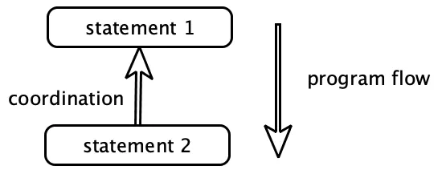
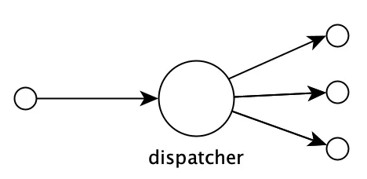
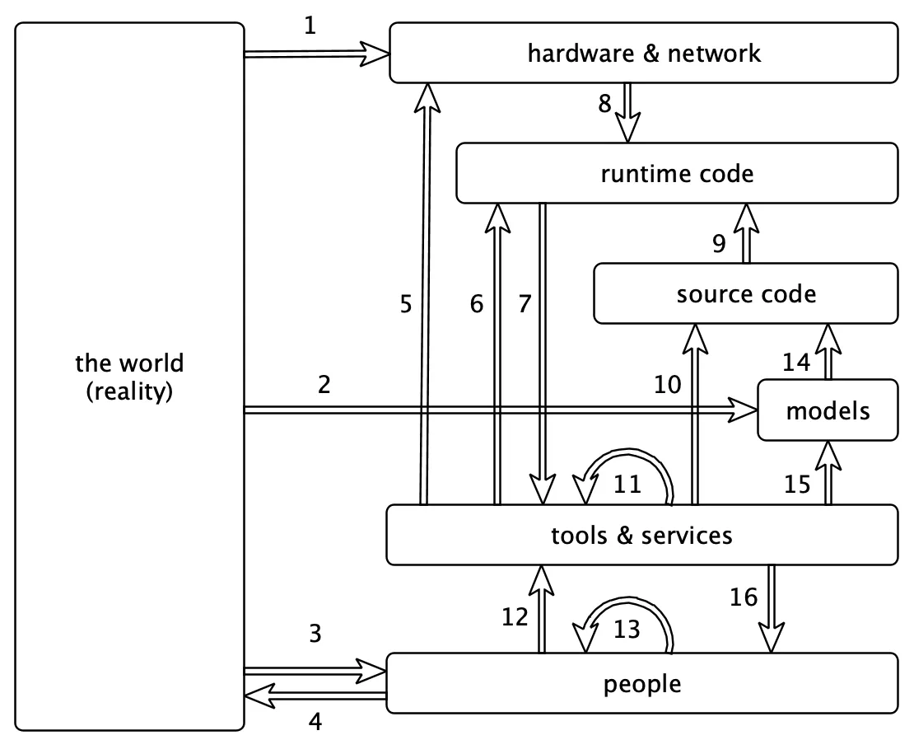
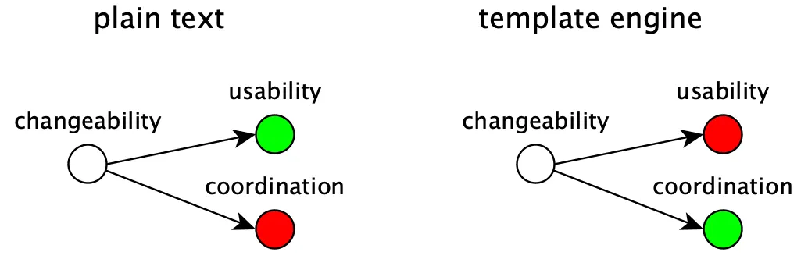
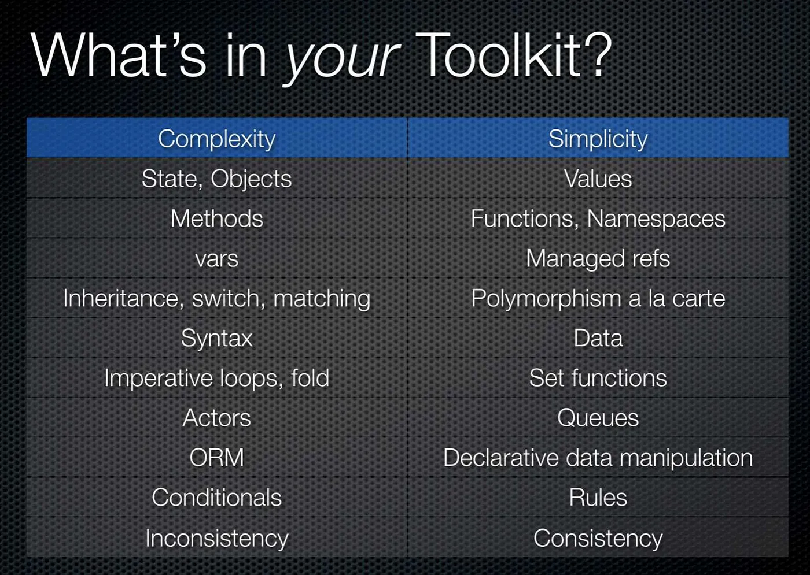

Tengstrand's Blog
The search for simpler code while having fun.
The search for simpler code while having fun.
Writing software is hard.
There are so many things to deal with, so many moving parts and things that can go wrong that it is easy to get lost. It's not only about building the right thing, but also about building the thing right.
As a reaction to that, the list of tips on how to best develop software has constantly grown over the years. Sometimes the tips have been quite helpful but others have been contradictory.
We have learned to not repeat ourselves, avoid mutable state, use pure functions, use interfaces, use polymorphism, prefer composition, use declarative style, avoid temporal coupling, work in small teams, make small commits, avoid long lived branches, test our code, and so on.
But wouldn't it be great if we could find one single, simple principle, that is easy to understand and that helps us to reason about software?
Let's rewrite the list and add why to get a hint:
As you can see, it's all about coordination!
Now you may think, what's wrong with coordination?
The problem with coordination is that it adds complexity to our systems which make them harder to change and work with. Let's look at an example.
Here we have inserted a heading in a simple text editor:
My heading ==========
The problem with this is that if we change the heading,
Your heading ==========
we also need to update the row below, by adding more = characters. The consequence is that we have introduced coordination that needs to be addressed by a human being. This may be a small problem here, because the missing equal signs are easy to spot and fix, but that's not always the case.
Another way to put it is that we have failed to automate the task, by introducing manual work instead of letting the computer do the job for us.
The solution is to switch to a more advanced text editor, like this:
My heading
If we now change the text to:
Your heading
the underline will automatically be updated by the editor, which solves our coordination problem through automation by the computer.
This correlation could be expressed with something like "when the heading is changed, make sure the corresponding row below has the same number of characters". This is something that a person could be responsible for, but it could also be delegated to, and automated by, a computer.
Note that we can't get rid of all manual work. Automation needs code, written by humans! Of course it's only a matter of time until even that task has also been taken over by computers, but that's another story!
When we work with software, we have to deal with the fact that most things around us constantly change.
That include hardware, protocols, data formats, security standards, operating systems, programming languages, libraries, frameworks, code, tooling, services, methodologies, staff, organisations, and not least ourselves!
I would argue that changeability is the most important feature of software to fight complexity. If we could find a simple model that is based on simple principles, then we have something useful that will help us create simpler systems.
This is what we need to do to achieve changeability:
Making things usable can be achieved by adapting our systems and tools to people and their limitations and needs. Code is no exception!
The level of usability of a codebase or part of a codebase has a direct correlation with how easy it is to change.
Here is what Wikipedia says about usability:
Usability is the ease of use and learnability of a human-made object such as a tool or device. In software engineering, usability is the degree to which a software can be used by specified consumers to achieve quantified objectives with effectiveness, efficiency, and satisfaction in a quantified context of use.
The main ways of achieving usability in software are:
Usability can be increased in many ways. Here are three examples:
Example 1: Give things a good name.
Example 2: Use a REPL to increase the productivity by shortening the feedback loop.
Example 3: Agree on a ubiquitous language when communicating.
There is a lot to say about usability but it's a huge research area of its own which we will not delve into here.
We have already said that coordination increases complexity and given some examples of it but we haven't looked into what causes it or where it arises.
There are three main areas that introduce the need for coordination:
When something gets bigger it doesn't just have a negative effect on the usability; by making things harder to understand and reason about, it also increases the need for coordination.
There are essentially two ways to minimise size:
Split it up
For example, if we double the number of people in a team by going from three to six people:

The number of ways to communicate increases from three to fifteen, which is a factor of 5! This exponential growth of coordination and complexity is one of the hardest problems to tackle in software. This unfortunate behaviour is the reason why some large projects fail.
The way to fight complexity is to split things up:

Here we have two teams of three people, where one person in each team is responsible for communicating with the other team and its own. This has reduced the number of connections from 15 to 7, which is more than a 50% reduction in coordination!
The same principles apply to code and data which is why it's better to have small functions than big ones and why a Polylith system made up of small reusable components is preferable to a big Monolith.
Make it composable
The other main technique to reduce size is by making things composable.
To achieve composability we have to introduce conformity in the way we process things:

The functional way is to have data as material and functions as tools. The object oriented way is to have data or interfaces as material and objects as tools.
To make this useful we need to reduce the number of variants of material and make sure the tools can operate on it. As long as that is met, we can allow ourself to have a large set of tools as a way to reduce complexity.
In Unix, the material consists of lines of strings and the tools are represented by a set of commands which can be combined together like LEGO©:
tr -cs A-Za-z '\n' |
tr A-Z a-z |
sort |
uniq -c |
sort -rn |
sed ${1}q
This example was taken from a solution that Douglas McIlroy wrote when he gave feedback to Donald Knuth. You can read more about the background here and also find a list with solutions to the problem written in different languages.
One source of complexity is when we need to coordinate the order in which things happen.
Sometimes it's important that things come in a certain order. Code is no exception:
Here statement 2 must wait for statement 1 to finish, which has introduced need for coordination between the two statements. The result is that we can't swap the order or parallelise the statements.
Sometimes one thing has to happen before another. In those cases, it's helpful if that is explicitly expressed, by the code, the planning tool, or whatever tool we use. But if the need for coordination is not clearly expressed, which is often the case with code, then you run an increased risk of introducing errors.
The solution is to separate what from how. If we can express what needs to be done and delegate how to some other parts, like a function, a queue, a rule engine or a DSL engine, then we are in a much better position to care less about the execution order.
Let's give some examples where the order is important:
Example 1: We plan our work before we start working.
Example 2: An init function must be called, before proceeding with other work (temporal coupling).
Example 3: A server must be installed with an operating system, a virtual machine, some tools and such, before other software can run on it.
Example 4: We learn and practice to achieve craftsmanship before we can perform tasks.
Some of these tasks, like setting up a server, can be automated which is the way we reduce coordination. Other tasks can't be fully automated, at least not yet, like planning, learning and practising.
The last thing on our list that causes coordination is when things need to be consistent. We live in a changing world, and things can very easily "get out of sync". Another challenge is to avoid duplication.
There are essentially two ways to keep things in sync:
Have only one
An efficient way to ensure that things are consistent is to only have one of everything. The instructions and functions that are part of a programming language are good examples.
Each "building block", like an if statement, is only defined once, but can be used from more than one place in the code:

The language itself is also only defined once, but can be used from several places (on different machines). The way we get rid of coordination is to only need to make changes in one place.
If we have some code or data that is copied and used in more than one place (e.g. two different services) then we have introduced duplication that needs to be coordinated to stay in sync and remain consistent:

If we later need to change one of them, e.g. to fix a bug, then we also need to remember to update the other service. The idea that copy&paste can be used to "decouple" services is often an illusion, because it doesn't remove the need for coordination.
Sometimes though, you really want to start from scratch. An example is when the MySql database was forked to become MariaDB.
Another example of removing coordination by centralising a definition into one place, is the use of polymorphism:
In object orientation, the choice of method to call when invoking a method on an object is based on the type of its class. Functional languages sometimes support an even more flexible way of dispatching calls, but the principle is the same.
The idea is to centralise the dispatching mechanism into one place so that we don't end up with duplicated if or case statements scattered around the codebase, that then need coordination.
Move in small steps
The most common example of when things get out of sync is when people, tools, code, models, hardware, and so on, don't move with their surroundings.
The way to tackle the problem is to move in small steps.
The reason we want to move in small steps, like making small commits in our VCS system or by having short sprints, is that the amount of coordination we need to do when "merging back" increases exponentially with the size of the "diff":

The more often we can merge back our code into master, the less coordination needs to be done. The shorter sprints we have, the easier it is to stay in sync with a changing world (the "master" branch).
We mentioned that many things are constantly changing when developing software. Changes introduce the need for coordination which is one of the main reasons why building software is so hard.
As we can see, coordination is going on at all levels:
There is a massive amount of coordination going on here. If we make a change in one place, it will often start a ripple effect of changes in other parts.
The ways in which we manage all these changes are:
We have already talked about how to automate coordination and that usability affects changeability. But what we haven't mentioned yet is that we sometimes have the choice to not change at all or to only make non-breaking changes.
Here are some examples:
Example 1: The original Intel x86 instruction set is still supported, decades after it was first released.
Example 2: The original bytecode instruction set for the Java Virtual Machine is still supported.
Example 3: The original HTTP protocol specification is still supported, more than four decades later.
The solution is to agree on a contract, make it into a standard, and then only make backward compatible changes. Simple as that!
These standards are globally shared, but we can use the same idea within an organisation or a codebase, by e.g. saying that we always use JSON when communicating between services, or that all code should run on top of the .Net or the JVM platform to ensure consistency.
Before we continue, we need to mention the masterpiece Out of the Tar Pit by Ben Moseley and Peter Marks. The reason is simple. It would be a crime to not include it in a blog post about complexity in software!
If you haven't read it already, I recommend that you do. It's well spent time!
They talk a lot about the importance of fighting complexity and where it arises.
They state that:
Complexity is the single major difficulty in the successful development of large-scale software systems.
They continue:
We believe that the major contributor to this complexity in many systems is the handling of state
With state they mean mutable state, especially uncoordinated mutable state. I agree that this is very much true, especially in languages that encourage use of uncoordinated mutable state.
The reason why mutable state is especially hard to deal with, is that it introduces the need for coordination. Sometimes this need for coordination is lacking, as in the case of global variables, which is why global variables are discouraged in general.
Luckily, there are ways of controlling mutable state, like the use of transactions, transient data structures, software transactional memory (stm), atoms, and more.
A common situation where mutable state can sneak in is via use of objects:
The bottom line is that all forms of OOP rely on state (contained within objects) and in general all behaviour is affected by this state. As a result of this, OOP suffers directly from the problems associated with state described above, and as such we believe that it does not provide an adequate foundation for avoiding complexity.
This is also why the use of immutable state and pure functions is preferred, because they don't introduce coordination by themselves.
The paper also talks about complexity caused by control, which is about the order in which things happen.
Their observation is that:
ordering in which things will happen is controlled by the order in which the statements of the programming language are written
The problem with this is that it adds need for coordination that is not explicitly expressed by the language with the result that the developers need to perform this coordination in their head when they read the code, which increases the risk of introducing errors in the code.
They describe it very well on page 8 and 9:
The difficulty is that when control is an implicit part of the language (as it almost always is), then every single piece of program must be understood in that context — even when (as is often the case) the programmer may wish to say nothing about this. When a programmer is forced (through use of a language with implicit control flow) to specify the control, he or she is being forced to specify an aspect of how the system should work rather than simply what is desired. Effectively they are being forced to over-specify the problem.
The paper discusses many other aspects of software, like identity, different kinds of programming paradigms, the relational model, and more. I think if more people understood this paper, much of the complexity that is produced in this industry could be eliminated!
So why use the word coordination when we already have dependency?
The main reason is that they mean different things.
That's also why we can't say "dependencies are bad", because it's not always the case. It's especially not true if we depend on something that never changes in a breaking way.
For example, depending on a Virtual Machine (e.g. the JVM) helps us eliminate the need for coordination between the compiled bytecode and the hardware. Depending on java.lang.String helps us work with strings in a safe way, without worrying about it changing in the future!
The rule of thumb is:
Stabilise the things you depend on
So if we can't use dependencies to describe how well a system is designed, maybe we can use coupling?
Coupling can be described with the connascence concept, but here we will use the Wikipedia definition:
In software engineering, coupling is the degree of interdependence between software modules; a measure of how closely connected two routines or modules are; the strength of the relationships between modules.
 https://en.wikipedia.org/wiki/File:Coupling_sketches_cropped_1.svg
https://en.wikipedia.org/wiki/File:Coupling_sketches_cropped_1.svg
This illustration measures three aspects of coupling: interdependency, coordination and information flow. If we need three words to describe coupling, where coordination is one of them, then it's probably not the same concept as coordination!
An indication that the concept is not so concisely defined is the huge list of different types of coupling: content coupling, common coupling, external coupling, control coupling, stamp coupling, data coupling, subclass coupling, and temporal coupling.
The underlying mechanisms that contribute to complexity are not clearly expressed, which makes the concept of loose or tight coupling hard to use as a tool to guide us when making design decisions.
The consequence is that people often try to "decouple" things without decreasing the need for coordination, which unfortunately often only adds more complexity. A better approach is instead to focus on reducing coordination and increasing usability as a way to fight complexity.
Sometimes you may have to chose between a usable solution that introduces coordination and a solution that does the opposite.
Let's assume you need to choose between introducing duplications in a text file, or using a template engine:
To store the content as plain text keeps it readable and search-able, but with the extra cost of remembering to update the file whenever the duplicated content changes.
Introducing a template engine will solve the coordination of the otherwise duplicated content, but will also add complexity and maybe reduce readability and search-ability.
What solution to choose should be based on how often the duplicated data changes, the risk of forgetting to update the file and how big an impact that may have compared to the cost of introducing a template engine.
Most often though, a reduction in coordination also has a positive effect on the usability:

That includes reducing the size, removing duplication, separating what from how, keeping things consistent, and more.
This diagram summarises what we have talked about:

This diagram will help you develop the thing right but not the right thing. That part you have to figure out yourself!
The goal is to give you a tool that guides you towards simpler solutions with increased quality in a way that allows you to work fast, have more fun and spend less money!
So don't hesitate to use dm the next time you need to make a design decision!
Our most important tool in our toolkit is the programming language. People often say that it doesn't matter what programming language we choose, because we can solve any problem regardless of choice of language, as long as it's fast enough and Turing complete.
This is as wrong as saying that it doesn't matter how skilled the players in a football team are. It may be a poor comparison, but programming languages also need "skills" to perform well!
Sometimes the speed of the language or how fast it compiles is the most important skill, but most often it's just about how well it's suited to fight complexity.
When we make our choice of language, we should pick one that ticks as many boxes in the Simplicity column as possible:
If this diagram looks familiar to you, then it's because it's taken from the brilliant talk Simple Made Easy by Rich Hickey.
Don't forget that the choice of programming language is not just a matter of taste, it's an opportunity to choose the best tool for the job to fight complexity.
If your favourite language doesn't tick that many boxes, then it can be an idea to look around and see if you can find one that does!
Let the war against complexity begin.
Happy coding!
Originally published on ITNEXT
Published: 2019-09-14
Tagged: complexity